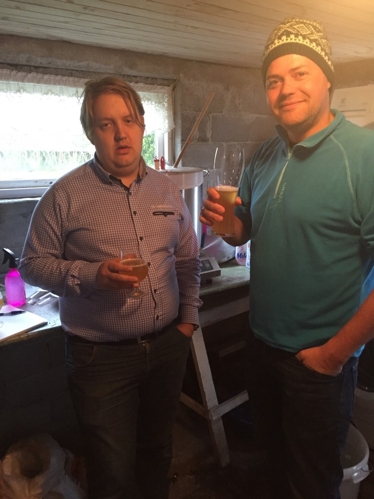
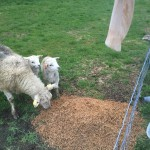
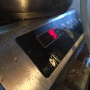

Det ble på tide å brygge igjen – lurt å gjøre dette før det er tomt for #8. Etter all hornmusikken tidlig på året har det gått lenger mellom hver bryggedag, noe som gjør at bodene blir skrinne. Det ble derfor forsøkt et såkalt midtukebrygg, der de involverte startet brygging etter en lang dag på jobb. Dette kan føre til et spennende resultat. Eller ikke.
Egentlig var det duket for at undertegnede endelig skulle få lage et brygg med korianderfrø, appelsinskall og hvete, men pga diverse var det slik at den ene malttypen lå nederst på en pall på Bryggselv, og i barmhjertighetens navn ble det i stedet innkjøpt ingredienser til en sommerstout (til udelt jubel fra resten av bryggerlauget som inntil nå ikke har vist stor interesse for korianderfrø i øl).
Valget falt på en amerikansk havrestout. Ikke veldig originalt men nå skulle vi i alle fall prøve en ny oppskrift fra noen HELT andre enn han med de mange Gahr-navnene. Vi (jeg) kjøpte derfor inn dobbel dose av en ABC Oregon Stout i den tro at vi nå ville få en helt ny malt/humleopplevelse.
DENGANG EI:
Det viser seg jo at ABC Brewing slett ikke er et hipsterfirma på vestkysten av USA, men består av en lokal stavangergutt i tillegg til den allestedsnærværende og tidligere nevnte Gahr. Hadde vi (jeg) husket noe som helst av det jeg har lest i ølbøkene burde jeg jo visst det men nå har jeg jo et påskudd for å lese de på ny.
Oppskriften ble plottet inn i Beersmith og 37,5 liter meskevann ble satt til varming klokken 17.

Etter leggetid for den minste ble vannet målt til 75-76 grader ved hjelp av hele 3 termometere. Mesking startet 18:50, og flere folk ankom. Denne dagen var noe spesiell, for dette var dagen da Lervig lanserte offisielt sitt nye øl; nemlig en berliner weisse kalt Sour Suzy. Husverten var innom den fantastiske Vaaland på Bryne og sikret seg en smaksprøve som ble delt ut ved ankomst. ABV på 4.0% gir muligheter for en liten smak selv om det er midtuke. -Som vi ser av bildet var det delte meninger om både øl og gjestfrihet.
Da ølet var inntatt og en del småprat unnagjort var det tid for mashout og skylling. Klokken kryper 


Klokken 2040 kokte det, og klokken 2110 ble bitterhumle tilsatt, frekk Chinook. Dette kan føre til økt skumdannelse og overkoking. Kokeplaten får gjennomgå – håper den tåler litt sukker og vann.
2116: Undertegnede fikk nok en gang støt av den sinnsyke koreawatten som er koblet til strømanlegget med minst 12 meter overledning. Grunnen til at dette spetakkelet står på nå etter oppkok er at vi gjerne vil varme spiralkjøleren til en grei temperatur slik at kokingen ikke stopper opp når vi dypper den ned i kokende vørter. Vi droppet den vanlige blowouten – teknikken der man blåser kjøleren fri for vann, da vi ikke tenkte den inneholdt så mye vann. MER OM DETTE UNDER
2118: INGEN tror på husverten når han hevder strømmottak i finger da denne dyppes i vannet, da dette ved tidligere brygg har blitt behørig tilbakevist av diverse hardhudede bergensere og pseudovitenskapelige teorier fra kvalitetskontrolløren.
2122: ALLE BEKREFTER STØT og husvert kan endelig sove godt.
Det tilsettes Cascade på 15 minutter sammen med gjærnæring, klaringsmiddel og tidligere nevnte dyppkjøler. Denne kjøleren protesterte kraftig på å nå kokepunktet da den tydeligvis innehold uante mengder vann, damp og svovel fra forrige brygging. Det spruter nå damp og kokende vann ut av det sinte kobbermonsteret og damelyder blir hørt. “Dragonstout” virker som et godt navneforslag, litt pga den nye sesongen av Game of Thrones men også fordi det sikkert blir en dritfin etikett med en sånt navn.

 Mer Cascade tilsettes på tominutteren og klokken 2244 ligger det etparogførti liter vørter med gjær på dunk. OG ble målt til 1.062, noe under målet som var på 1.067.
Mer Cascade tilsettes på tominutteren og klokken 2244 ligger det etparogførti liter vørter med gjær på dunk. OG ble målt til 1.062, noe under målet som var på 1.067.